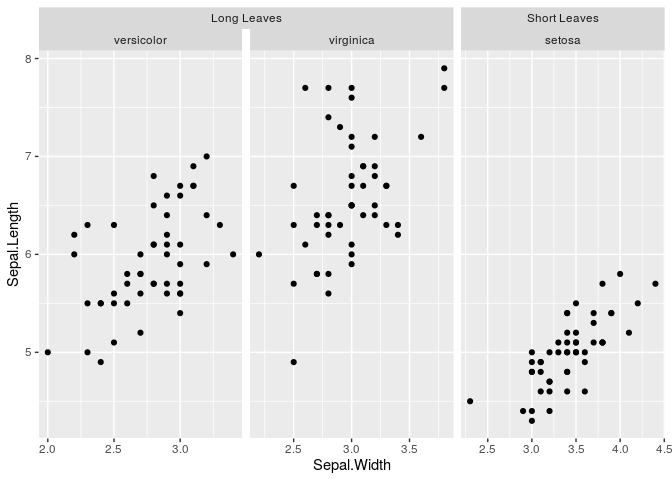
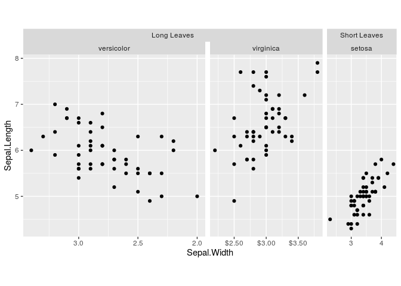
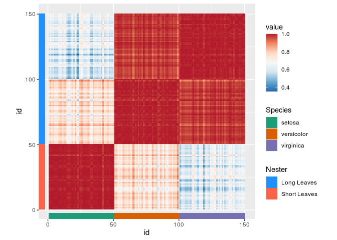
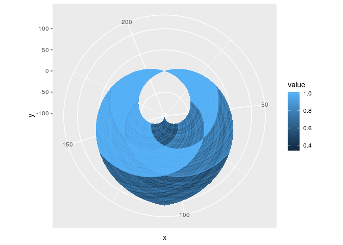
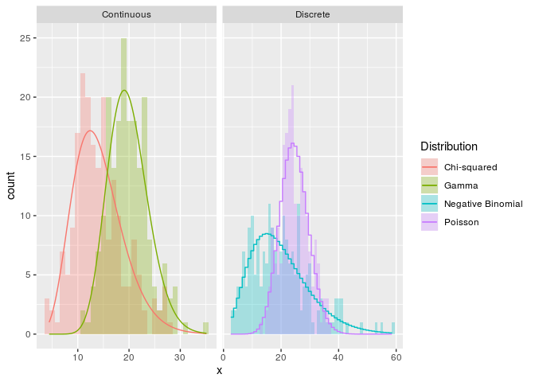

The ggh4x package is a ggplot2 extension package. It provides some utility functions that are don’t entirely fit within the ‘grammar of graphics’ concept —they can be a bit hacky— but can nonetheless be useful in tweaking your ggplots. Examples include adjusting the sizes of facets, mapping multiple aesthetics to colours and specififying individual scales for facets. Besides this, it is also a small collection of geoms, facets, positions, guides and stats.
Installation
You can install the development version from GitHub with:
# install.packages("devtools")
devtools::install_github("teunbrand/ggh4x")Overview
There are a few topics explored in the package’s vignettes with examples. Links to these topics are below.
- Options to tailor facets, including:
- Nested facets that have strips that can span multiple panels.
- Adjusting the position scales on a per-panel basis.
- Varying the size of panels without being limited to the global
aspect.ratioor fixed coordinates.
- ggh4x has some position guides that change the way x- and y-axes look. You can:
- include the minor breaks as minor tick marks.
- detail log10 axes with logarithmic tickmarks.
- indicate nested relations in discrete axes.
- mirror the results of hierarchical clustering with dendrogram axes with help from the ggdendro package.
- There are some stat layers that can make it easier to plot. These stat layers can:
- overlaying the theoretical density of several distributions, which are computed with the fitdistrplus package.
- draw a trendline of your data with a rolling kernel.
- plainly transform x and y position in a group-wise manner.
- calculate run-length encodings of your data.
Customised facets
This example illustrates how you can use nested facets:
library(ggh4x)
#> Loading required package: ggplot2
df <- iris
df$Nester <- ifelse(df$Species == "setosa", "Short Leaves", "Long Leaves")
g <- ggplot(df, aes(Sepal.Width, Sepal.Length)) +
facet_nested(~ Nester + Species, scales = "free")
g + geom_point()
Sometimes, you might want to vary the scales of your facets independently from oneanother. You could use facetted_pos_scales() to achieve this, and the facet argument scales had to be set to free.
scales <- list(
scale_x_reverse(),
scale_x_continuous(labels = scales::dollar),
scale_x_continuous(breaks = c(3, 4))
)
g <- g + facetted_pos_scales(x = scales)
g + geom_point()
If you don’t like the sizes of the facet panels, you can tweak these using force_panelsizes() in a data-independent manner, without having to rely on facet_grid’s space = "free" argument.
# Inverse golden ratio
phi <- 2 / (1 + sqrt(5))
g <- g + force_panelsizes(rows = 1, cols = c(1, phi, phi^2), respect = TRUE)
g + geom_point()
Multiple colours
One colourscale is in some cases not sufficient to describe your data. You can map several variables to colours with scale_colour_multi() if data are in seperate layers. You can see from all the warnings that some functions in this package might be called ‘hacks’.
# ggsubset is a convenience function to pull data from
# the main ggplot call in layers
g <- g +
geom_point(aes(swidth = Sepal.Width),
ggsubset(Species == "setosa")) +
geom_point(aes(pleng = Petal.Length),
ggsubset(Species == "versicolor")) +
geom_point(aes(pwidth = Petal.Width),
ggsubset(Species == "virginica"))
#> Warning: Ignoring unknown aesthetics: swidth
#> Warning: Ignoring unknown aesthetics: pleng
#> Warning: Ignoring unknown aesthetics: pwidth
g <- g + scale_colour_multi(
aesthetics = c("swidth", "pleng", "pwidth"),
colours = list(c("black", "green"),
c("gray", "red"),
c("white", "blue")),
guide = guide_colourbar(barheight = unit(50, "pt"))
)
g
Mixing continuous and discrete colours can also be done, with the slightly more verbose scale_listed(), such as in the following heatmap.
# Making an iris correlation-heatmap
iriscor <- cor(t(iris[, 1:4]))
iriscor <- data.frame(
x = as.vector(row(iriscor)),
y = as.vector(col(iriscor)),
value = as.vector(iriscor)
)
df$id <- seq_len(nrow(df))
# Setting up a basic heatmap
g <- ggplot(df, aes(id, id)) +
# geom_tilemargin can be useful for annotating heatmaps
geom_tilemargin(aes(species = Species),
sides = "b") +
geom_tilemargin(aes(leave = Nester),
sides = "l") +
geom_raster(aes(x, y, cor = value),
data = iriscor) +
coord_fixed()
#> Warning: Ignoring unknown aesthetics: species
#> Warning: Ignoring unknown aesthetics: leave
#> Warning: Ignoring unknown aesthetics: cor
# Adding the colour scales
g <- g + scale_listed(scalelist = list(
scale_fill_distiller(palette = "RdBu", aesthetics = "cor"),
scale_fill_brewer(palette = "Dark2", aesthetics = "species"),
scale_fill_manual(values = c("dodgerblue", "tomato"),
aesthetics = "leave")
), replaces = rep("fill", 3))
g
Position transforms
On the topic of rasters, if parameterised as a polygon with geom_polygonraster(), they can subjected to linear transformations such as rotations and shears with position_lineartrans().
g <- ggplot(iriscor, aes(x, y, fill = value)) +
geom_polygonraster(position = position_lineartrans(angle = 45))
g + coord_fixed()
In fact, you could even do non-linear transformation with polygon-rasters, should you dare venture that way.
g + coord_polar()
Density estimates
Ever get tired of unparameterised kernel density estimates? Now you can fit a wide range of theoretical densities from the fitdistrplus package to your data on the fly!
set.seed(1)
n <- 200
df <- data.frame(
x = c(rpois(n, 25), rnbinom(n, 5, 0.2),
rgamma(n, 30, 1.5), rchisq(n, 15)),
class = rep(c("Discrete", "Continuous"), each = n*2),
Distribution = rep(c("Poisson", "Negative Binomial",
"Gamma", "Chi-squared"),
each = n)
)
ggplot(df, aes(x, fill = Distribution, colour = Distribution)) +
geom_histogram(position = "identity", binwidth = 1,
alpha = 0.3, colour = NA) +
stat_theodensity(aes(y = stat(count)),
ggsubset(class == "Discrete"),
distri = "nbinom", geom = "step",
position = position_nudge(x = -0.5)) +
stat_theodensity(aes(y = stat(count)),
ggsubset(class == "Continuous"),
distri = "gamma") +
facet_grid(~ class, scales = "free_x")
Footnote
I would like to mention that there are also packages that do some similar things to what this package does. facetscales also has a facet function wherein scales can set per row/colum. The relayer and ggnewscale packages also allow multiple colour scales in the same plot.
Historically, many of these functions come from the ggnomics package, but have been moved here as a package independent of Bioconductor infrastructure.